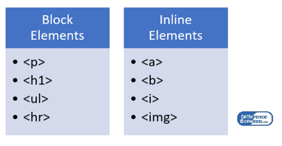

Here's how you can work with block-level elements in Visual Studio Code:
Open a Project:
First, make sure you have Visual Studio Code installed. Open your project folder in Visual Studio Code. HTML File:
Create or open an HTML file where you want to use block-level elements. Add Block-Level Elements:
In HTML, common block-level elements include < div >, < p >, < h1 > < h6 >, < ul >, < ol >, < li >, etc. Example: html
VSCode Features:
Visual Studio Code provides features like syntax highlighting, autocompletion, and linting for HTML, making it easier to work with HTML code. Extensions:
You can enhance your HTML development experience by installing extensions. For example, "Auto Rename Tag" and "HTML CSS Support" are popular extensions for HTML development. Preview HTML:
You can use the built-in live server extension or other extensions like "Live Server" to preview your HTML files in a browser directly from VSCode. CSS Styling (Optional):
Use CSS to style your block-level elements. You can either include styles directly in the HTML file or link to an external stylesheet.